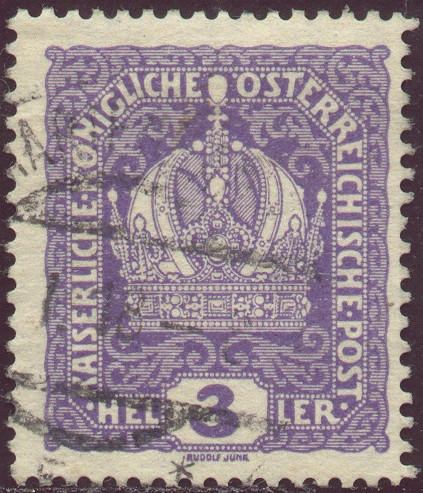
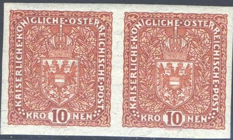

{kind=link}


Return To Catalogue - Austria overview - Austria 1916-1918, miscellaneous
Note: on my website many of the
pictures can not be seen! They are of course present in the
catalogue;
contact me if you want to purchase the catalogue.
For Issues of 1908 to 1915 click here.
Crown
3 h violet 5 h green 6 h orange 10 h red 12 h blue Overprinted 'Deutschosterreich' in fancy letters (1918)

3 h violet 5 h green 6 h orange 10 h red 12 h blue Emperor Franz Joseph

15 h red 20 h brown 25 h blue 30 h grey Emperor Charles (1917)
15 h brown 20 h green 25 h blue 30 h violet Overprinted 'Deutschosterreich' in fancy letters (1918)

15 h brown 20 h green 25 h blue 30 h violet
Note on the 'Deutsch Osterreich' overprints on the 15 h to 30 h: a forger of Vienna made forged overprints 'Deutsch Ostereich' (with one 'r' only) on the unoverprinted stamps and then tried to sell them as sensational errors.
Arms, double headed eagle


40 h olive 50 h green 60 h bue 80 h brown 90 h lilac 1 K red (1918) Overprinted 'Deutschosterreich' in fancy letters (1918)

40 h olive 50 h green 60 h bue 80 h brown 90 h lilac 1 K red Arms of Austria, larger size

2 K blue 3 K red 4 K green 10 K violet Overprinted 'Deutschosterreich' in fancy letters (1918)

2 K blue 3 K red 4 K green 10 K violet Airmail, overprinted 'FLUGPOST'


1.50 K on 2 K violet 2.50 K on 3 K yellow 4 K grey Overprinted 'PORTO' and value on non issued stamps of this serie

10 on 24 h blue 15 on 36 h violet 20 on 54 h orange 50 on 42 h brown
Value of the stamps |
|||
vc = very common c = common * = not so common ** = uncommon |
*** = very uncommon R = rare RR = very rare RRR = extremely rare |
||
| Value | Unused | Used | Remarks |
| 3 h | c | vc | |
| 5 h | c | vc | |
| 6 h | c | c | |
| 10 h | c | vc | |
| 12 h | c | c | |
| 15 h | c | vc | Franz Joseph |
| 15 h | vc | vc | Charles |
| 20 h | * | vc | Franz Joseph |
| 20 h | c | vc | Charles |
| 25 h | * | vc | Franz Joseph |
| 25 h | c | vc | Charles |
| 30 h | * | vc | Franz Joseph |
| 30 h | c | vc | Charles |
| 40 h | * | vc | |
| 50 h | * | vc | |
| 60 h | * | vc | |
| 80 h | * | vc | |
| 90 h | * | vc | |
| 1 K | c | vc | |
| 2 K | c | vc | |
| 3 K | * | c | |
| 4 K | * | * | |
| 10 K | *** | *** | |
| Overprinted 'Deutsch Osterreich' | |||
| 3 h | vc | vc | |
| 5 h | vc | vc | |
| 6 h | c | c | |
| 10 h | vc | vc | |
| 12 h | c | c | |
| 15 h | vc | vc | |
| 20 h | vc | vc | |
| 25 h | * | c | |
| 30 h | c | vc | |
| 40 h | c | vc | |
| 50 h | * | c | |
| 60 h | * | c | |
| 80 h | vc | vc | |
| 90 h | vc | vc | |
| 1 K | c | vc | |
| 2 K | * | vc | |
| 3 K | * | * | |
| 4 K | * | * | |
| 10 K | *** | *** | |
Flugpost (airmail) |
|||
| 1 K 50 on 2 K | * | * | |
| 2 K 50 on 3 K | * | * | |
| 4 K | *** | *** | |
| I've seen these airmail stamps without
overprint and surcharge, imperforate, as well as a imperforate red 10 K stamp. Are these proofs?  |
|||
| Porto | |||
| 10 on 24 h | c | vc | |
| 15 on 36 h | c | c | |
| 20 on 54 h | vc | vc | |
| 50 on 42 h | c | vc | |
('FLUGPOST' or airmail issue reprint of the 'Internationale
Flugpost-Ausstellung IFA Wien 1968, the colours are different, on
top the text 'NEUDRUCK DER FLUGPOSTMARKENSERIE 1918' has been
printed)
I have seen postal stationery of the 3 h violet crown design, 15 h red Emperor Franz Joseph design and the 15 h brown Emperor Charles design.


(Russian text, 'C.M.T.', 'Ykp.H.P.' and '3.Y.H.P.' overprints,
these overprints were used in Western Ukraine)
Stamps with overprint 'Regno d'Italia Venezia Giulia' or 'Regno d'Italia Trentino' were issued for the Italian occupation of Austria.
War forgeries


War forgeries of the 5 h, 10 h and 25 h values.
Austria 1916-1918, miscellaneous
For Issues of 1919 to 1921 click here.
{kind=link}